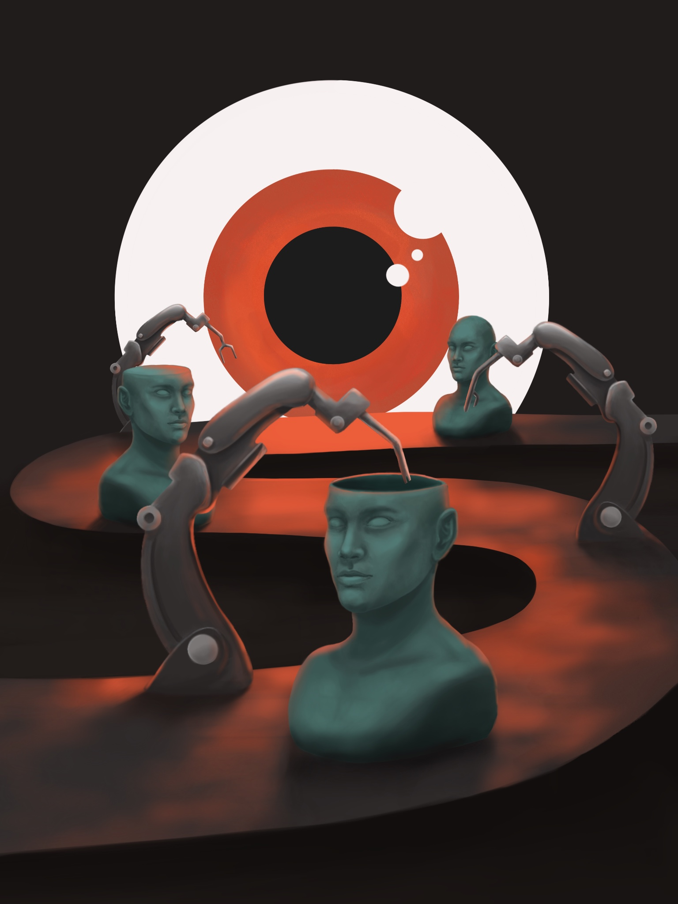

Doblepensamiento en la Era de la Desinformación.
Publicado el 15 de febrero de 2026
“Saber y no saber, ser consciente de la verdad absoluta mientras se dicen mentiras cuidadosamente construidas.” – George Orwell, 1984
El doblepensamiento, ese concepto tan inquietante y perturbador, me persigue cada vez que veo las noticias o abro las redes sociales. En la novela, el Partido exige que los ciudadanos acepten dos ideas contradictorias como ciertas al mismo tiempo: la guerra es paz, la libertad es esclavitud. Hoy, en 2026, siento que el doblepensamiento se ha infiltrado en nuestra sociedad, no por decreto de un "Gran Hermano", sino por nuestra propia voluntad.
Me explico: piensa en cómo consumimos información. Vemos titulares que proclaman una verdad en un medio y la opuesta en otro y a menudo lo aceptamos sin cuestionar. Políticos que prometen transparencia mientras ocultan escándalos, empresas que venden sostenibilidad mientras contaminan, influencers que predican autenticidad desde vidas filtradas, organizaciones que luchan contra el maltrato animal mientras pactan con partidos que promueven la cultura violenta hacia los animales. ¿No es esto doblepensamiento? Sabemos que hay contradicciones, pero las ignoramos porque es más fácil seguir adelante que detenernos a pensar.
Lo que me asusta es lo cómodos que nos hemos vuelto con estas paradojas. Vuelvo a hacer mención al libro, ya que el doblepensamiento era una herramienta para mantener el control, para evitar que la gente cuestionara al Partido. Hoy, la desinformación y la polarización nos entrenan para hacer lo mismo: aceptar mentiras si encajan con nuestras creencias, ignorar hechos si nos incomodan. Me pregunto si, como Winston (el protagonista), estamos siendo entrenados para no ver la verdad aunque esté frente a nosotros.
Resistir el doblepensamiento empieza por enfrentar dichas contradicciones. Cuando leamos una noticia, debemos preguntarnos: ¿Qué pruebas hay? ¿Quién se beneficia de esta narrativa? Escribir este blog es mi forma de practicar la claridad, de rechazar la niebla de las verdades a medias. Creo que podemos recuperar nuestra capacidad de pensar críticamente si nos atrevemos a dudar, a investigar, a no conformarnos. ¿Cómo lidias tú con las contradicciones en el mundo actual? Estaré encantada de leer lo que piensas.
Hasta la próxima reflexión,
R.